HOW TO TROUBLESHOOT ECU CONTROLLED SYSTEMS > ELECTRONIC CIRCUIT INSPECTION PROCEDURE |
| BASIC INSPECTION |
WHEN MEASURING RESISTANCE OF ELECTRONIC PARTS
Unless otherwise stated, all resistance measurements should be made at an ambient temperature of 20°C (68°F). Resistance measurements may be inaccurate if measured at high temperatures, i.e. immediately after the vehicle has been running. Measurements should be made after the engine has cooled down.
| 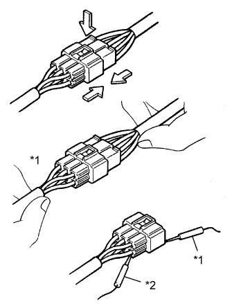 |
HANDLING CONNECTORS
| *1 | INCORRECT |
| *2 | CORRECT |
When disconnecting a connector, first squeeze the mating connector housing halves tightly together to release the lock, and then press the lock claw and separate the connector.
When disconnecting a connector, do not pull on the harnesses. Grasp the connector directly and separate it.
Before connecting a connector, check that there are no deformations, damage, looseness or missing terminals.
When connecting a connector, press firmly until it locks with a "click" sound.
If checking a connector with a TOYOTA electrical tester, check the connector from the backside (harness side) using a mini test lead.
| 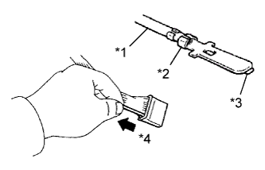 |
CHECKING CONNECTORS
| *1 | Core Wire |
| *2 | Looseness of Crimping |
| *3 | Terminal Deformation |
| *4 | Pull Lightly |
Checking when a connector is connected: Squeeze the connectors together to confirm that they are fully connected and locked.
Checking when a connector is disconnected: Check by pulling the wire harness lightly from the backside of the connector. Look for unlatched terminals, missing terminals, loose crimps or broken conductor wires. Visually check for corrosion, metallic or foreign matter and water, and bent, rusted, overheated, contaminated or deformed terminals.
 |
Checking the contact pressure of the terminal: Prepare a spare male terminal. Insert it into a female terminal, and check for ample tension when inserting and after full engagement.
| 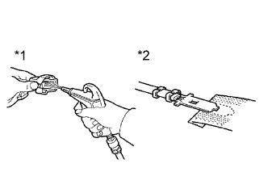 |
CONNECTOR TERMINAL REPAIR METHOD
| *1 | CORRECT |
| *2 | INCORRECT |
If there is any foreign matter on the terminal, clean the contact point with compressed air or a cloth. Never rub the contact point using sandpaper as the plating may come off.
If there is abnormal contact pressure, replace the female terminal. If the male terminal is gold-plated (gold color), use a gold-plated female terminal; if it is silver-plated (silver color), use a silver-plated female terminal.
Damaged, deformed or corroded terminals should be replaced. If the terminal does not lock into the housing, the housing may have to be replaced.
| 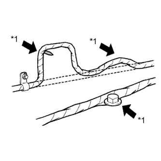 |
WIRE HARNESS HANDLING
| *1 | INCORRECT |
If removing a wire harness, check the wiring and clamps before proceeding so that it can be restored in the same way.
Never twist, pull or slacken the wire harness more than necessary.
The wire harness should never come into contact with any high temperature part, rotating, moving, vibrating or sharp-edged parts. Avoid contact with panel edges, screw tips and other sharp items.
When installing parts, never pinch the wire harness.
Never cut or break the cover of the wire harness. If it is cut or broken, repair it with insulating tape or replace the wire harness.
| CHECK FOR OPEN CIRCUIT |
| 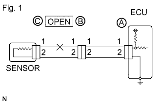 |
For an open circuit in the wire harness in Fig. 1, check the resistance or voltage, as described below.
| 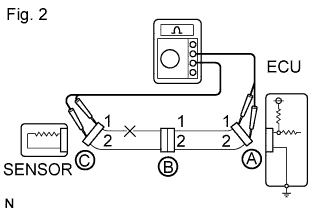 |
Check the resistance.
Disconnect connectors A and C and measure the resistance between them.
| Tester Connection | Specified Condition |
| Connector A terminal 1 - Connector C terminal 1 | 10 kΩ or higher |
| Connector A terminal 2 - Connector C terminal 2 | Below 1 Ω |
| 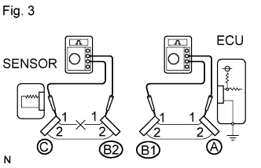 |
Disconnect connector B and measure the resistance between the connectors.
| Tester Connection | Specified Condition |
| Connector A terminal 1 - Connector B1 terminal 1 | Below 1 Ω |
| Connector B2 terminal 1 - Connector C terminal 1 | 10 kΩ or higher |
| 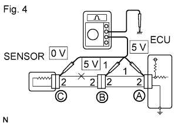 |
Check the voltage.
In a circuit in which voltage is applied to the ECU connector terminal, an open circuit can be checked by conducting a voltage check.
With each connector still connected, measure the voltage between the body ground and these terminals (in this order): 1) terminal 1 of connector A; 2) terminal 1 of connector B; and 3) terminal 1 of connector C.
| Tester Connection | Specified Condition |
| Connector A terminal 1 - Body ground | 5 V |
| Connector B terminal 1 - Body ground | 5 V |
| Connector C terminal 1 - Body ground | Below 1 V |
| CHECK FOR SHORT CIRCUIT |
| 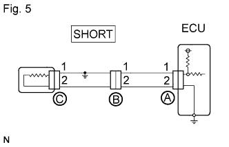 |
If the wire harness is ground shorted (Fig. 5), locate the section by conducting a resistance check with the body ground (below).
| 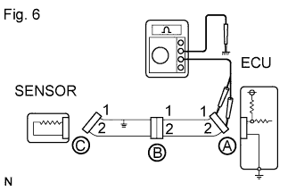 |
Check the resistance with the body ground.
Disconnect connectors A and C and measure the resistance.
| Tester Connection | Specified Condition |
| Connector A terminal 1 - Body ground | Below 1 Ω |
| Connector A terminal 2 - Body ground | 10 kΩ or higher |
| 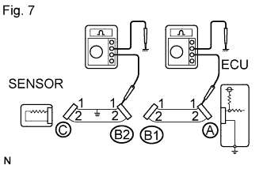 |
Disconnect connector B and measure the resistance.
| Tester Connection | Specified Condition |
| Connector A terminal 1 - Body ground | 10 kΩ or higher |
| Connector B2 terminal 1 - Body ground | Below 1 Ω |
| CHECK AND REPLACE ECU |
First, check the ECU ground circuit. If it is faulty, repair it. If it is normal, the ECU could be faulty. Temporarily replace the ECU with a normally functioning one and check if the symptoms occur. If the trouble symptoms disappear, replace the original ECU.
| 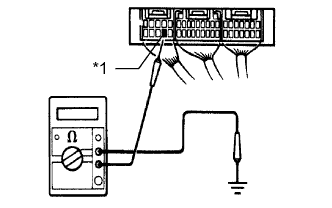 |
Measure the resistance between the ECU ground terminal and body ground.
| *1 | Ground |
| 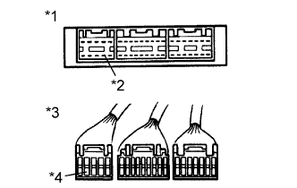 |
Disconnect the ECU connector. Check the ground terminals on the ECU side and wire harness side for bent terminals, corrosion or foreign matter. Lastly, check the contact pressure of the female terminals.
| *1 | Component without harness connected (ECU) |
| *2 | Ground |
| *3 | Front view of wire harness connector (to ECU) |
| *4 | Ground |